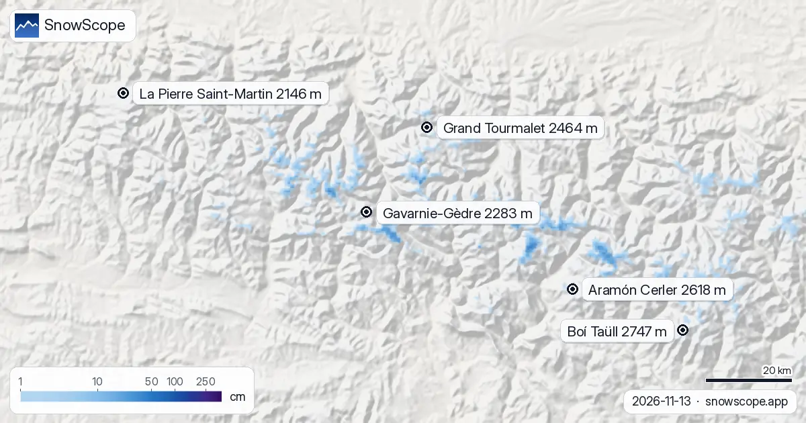

Zero termico sui Pirenei: da 2.230 m a 2.820 m, quota neve fino a 2.500 m (13 novembre)
Lo zero termico decide se le montagne accumulano neve o scaricano pioggia: nei prossimi giorni la nostra previsione lo colloca sui Pirenei tra 2.230 m e 2.820 m. Il venerdì 13 novembre la quota neve a Boí Taüll arriva a 2.500 m nelle ore più miti, circa 300 m sotto quel livello. La neve in montagna è acqua trattenuta per la primavera: quello che cade ora alimenterà più tardi fiumi e invasi.
Le previsioni neve in tempo reale per Boí Taüll nell'app SnowScopeAltezza neve, allerte powder e mappa 3D, gratis.
La pioggia arriverà sul manto?
La neve già al suolo sembra al sicuro dalla pioggia nei prossimi giorni: nei giorni umidi la quota neve resta abbastanza bassa in queste località.
A Baqueira-Beret (2.510 m) la previsione indica 14 mm di precipitazioni, l'acqua che arriva sulla montagna; nelle ore umide la quota neve è vicina a 2.540 m.
Sono previsti 25 mm di precipitazioni a Saint-Lary (2.515 m); mentre cadono, la quota neve è vicino a 2.560 m.
| Località | Altezza neve | Neve fresca, 72 h | In arrivo, prossimi giorni | Quota max |
|---|---|---|---|---|
| Boí Taüll | 2 cm | 6 cm | 8 cm | 2.747 m |
| Aramón Cerler | 1 cm | 6 cm | 10 cm | 2.618 m |
| Grand Tourmalet | 2 cm | 6 cm | 11 cm | 2.464 m |
| Gavarnie-Gèdre | 0 cm | 3 cm | 17 cm | 2.283 m |
| La Pierre Saint-Martin | 0 cm | 3 cm | 7 cm | 2.146 m |

Pioggia o neve in ogni località
A Boí Taüll (base 2.039 m, vetta 2.747 m) la quota neve arriva a circa 2.500 m il 13 novembre: la parte alta guadagna neve, i pendii bassi ricevono pioggia o neve bagnata.
Aramón Cerler (base 1.503 m, vetta 2.618 m): una quota neve di circa 2.500 m il 13 novembre, tra base e vetta, vuol dire neve immagazzinata in alto mentre i pendii bassi ricevono pioggia o neve bagnata.
Grand Tourmalet (base 1.459 m, vetta 2.464 m): la quota neve sale a circa 2.500 m il 13 novembre, sopra la vetta, quindi le precipitazioni cadrebbero come pioggia o neve bagnata su tutta la montagna e defluirebbero.
A Gavarnie-Gèdre (base 1.818 m, vetta 2.283 m) una quota neve di circa 2.500 m il 13 novembre sta sopra la vetta: pioggia o neve bagnata su ogni pendio se arrivano precipitazioni.
La Pierre Saint-Martin (base 1.519 m, vetta 2.146 m): la quota neve sale a circa 2.300 m il 13 novembre, sopra la vetta, quindi le precipitazioni cadrebbero come pioggia o neve bagnata su tutta la montagna e defluirebbero.
Lo zero termico e la fusione
Lo zero termico sulle località qui sotto, dall'ora più fredda alla più mite di ogni giorno: venerdì 13 novembre: da 2.470 m a 2.820 m. sabato 14 novembre: da 2.400 m a 2.750 m. domenica 15 novembre: da 2.230 m a 2.720 m. lunedì 16 novembre: da 2.270 m a 2.640 m.
Come la neve diventa pioggia sotto lo zero termico
La neve che cade incontra aria più calda sotto lo zero termico e inizia a fondere, ma le servono tempo ed energia per diventare pioggia, quindi il passaggio avviene circa 300 m più in basso: è la quota neve. L'evaporazione in aria secca raffredda i fiocchi e può abbassarla ancora.
Consigli per sciatori
- Nei giorni miti prendi presto gli impianti di vetta e le piste a nord, prima che la neve diventi molle.
- Lo zero termico è una previsione e può spostarsi di diverse centinaia di metri, quindi guarda di nuovo la mappa il giorno prima di partire.
- Prima di ogni uscita in fuoripista o scialpinismo leggi il bollettino valanghe ufficiale (link qui sotto).
- Neve sulla mappa non significa località aperta: controlla impianti e date sul suo sito.
Su questi numeri
Le altezze neve delle località sono la neve più alta sui pendii superiori secondo il modello neve di SnowScope (circa 1 km, calcolo del 13 novembre); sono stime per un'area, non una misura in un punto. I valori delle stazioni sono misure alla data indicata. Le previsioni possono cambiare. Leggi sempre il bollettino valanghe ufficiale prima del fuoripista.
Bollettini valanghe ufficiali: Météo-France / Meteocat / AEMET
Cita questo articolo
Per ricerca, didattica o stampa: numeri e grafici sono liberamente riutilizzabili con licenza CC BY 4.0 citando così.
SnowScope (2026), Zero termico sui Pirenei: da 2.230 m a 2.820 m, quota neve fino a 2.500 m (13 novembre), https://snowscope.app/blog/it/2026/11/pyrenees-freezing-level-snow-line-13-november-2026.html, consultato il 2026-11-13
SnowScope (Atlas Labs). (2026, November 13). Zero termico sui Pirenei: da 2.230 m a 2.820 m, quota neve fino a 2.500 m (13 novembre). SnowScope snow reports. https://snowscope.app/blog/it/2026/11/pyrenees-freezing-level-snow-line-13-november-2026.html
BibTeX
@misc{snowscope2026pyreneesfreezinglevelsno,
author = {{SnowScope (Atlas Labs)}},
title = {Zero termico sui Pirenei: da 2.230 m a 2.820 m, quota neve fino a 2.500 m (13 novembre)},
year = {2026},
month = nov,
howpublished = {\url{https://snowscope.app/blog/it/2026/11/pyrenees-freezing-level-snow-line-13-november-2026.html}},
note = {Published 2026-11-13 12:19 UTC; accessed 2026-11-13}
}· CC BY 4.0 · Metodi, dati e strumenti →
Boí Taüll: neve e temperatura per quota, quest'inverno vs lo scorso (strumenti) →
Segui Boí Taüll
Gratis: un messaggio quando arriva la neve e il meteo ogni mattina.
Altri bollettini neve

Abbiamo confrontato la neve di oggi in 4 località sui Pirenei con la stessa data in ciascuno dei 46 inverni passati. 1 sono nettamente sopra la norma.

Quanto a lungo i Pirenei sono rimasti bianchi ogni inverno dal 2000-01, visti dal satellite, e l'altezza della neve in 10 stazioni con lunghe serie. Tre inverni magri di fila sono finiti nel 2025-26; questo autunno è cominciato in modo normale.

La nostra previsione mette lo zero termico sui Pirenei tra 2.610 m e 3.840 m nei giorni a venire. Nel momento più mite della giornata la quota neve, …